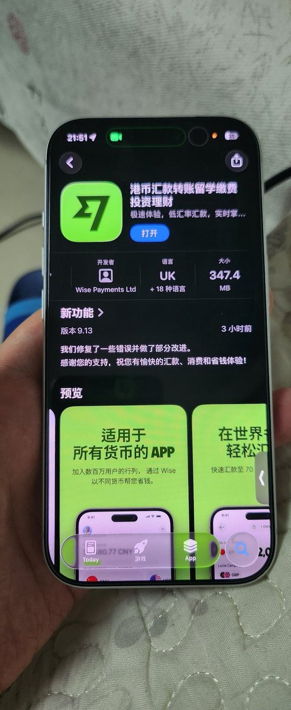

奶昔🥤
@realNyarime
@yqua_ @Wise 所以你俩谁是原创啊

贝利Baily
@bailyLU
瞧把孩子逼的🤦♂️wise今天起也有中文名字了《港币汇款转账留学投资理财》 https://t.co/gbsj1gHe9w
铨🍥
@yqua_
事实上 @Wise 有自己的中文名
叫《港币汇款转账留学缴费投资理财》
感觉不如直接叫Wise https://t.co/puMz7Hepm4